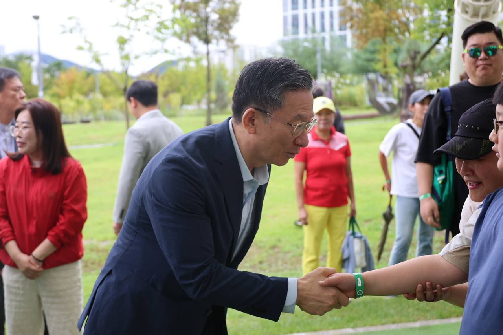

Photo Archive
현장의 기록

On-site Activity
국민 곁으로 가는 현장 행보

주요 정책 발표 및 브리핑
글로벌 스탠다드 확립

국민과 소통하는 법무행정
국제분쟁 완승 환수
0
연승
론스타·엘리엇·쉰들러 국제분쟁 전부 승소 및 소송비용 환수
정상화된 직접 수사권
0
개
비대해진 검찰 직접 수사권을 대폭 축소하여 제자리로 복원
과거사 배상 예비비
0
억원
국가폭력 피해자의 온전한 권리 회복을 위한 배상금 확보